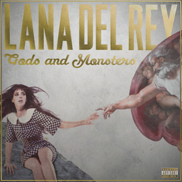
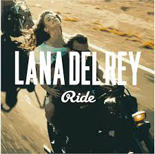
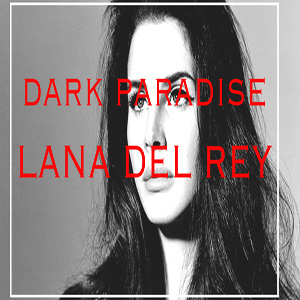
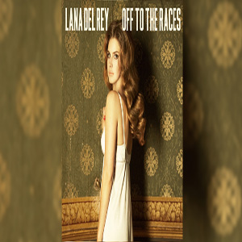

Jenny's Music Site
Favorite Artists At the Moment
My Favorite Lana Del Rey Songs
To narrow down my favorite songs of Lana's, it took me a lot of time and thought. There are so many songs that mean so much to me on different levels. Below, I have constructed a list of songs that are meaningful to me and a description of what I percieve them to be.
2. Ride: Ride is a song on her early album, "Paradise". It is about Lana's travels on the open road, and the conflicts she came across when she was on her journey. It displays her emotions in a very honest way. She sings about riding through life no matter the circumstances. This song is very real and gives an insight into Lana's personal life.
3. Dark Paradise: Dark Paradise is on Lana's album "Born To Die". This song is about a breakup with a man, and how much she loves him but he doesnt love her back. She sings about how hard it is to move on, and how memories can break a person. This song is the perfect break up song because it seems so truthful and easy to relate to. The dark paradise she is talking about in the song is actually a look into her mind when the man leaves. You can feel the pain in her voice and it makes it very easy to beleive this really happened to her.
4. Off To The Races: This song I like simply because of the beat it holds. The beat is different than any of her other songs, it is very upbeat and fast. Once again, this song depicts one of the moments in Lana's life involving a man.
5. Body Electric: This song is on Lana's album, Paradise. This song simply reflects Lana's view on nightlife, depciting a moment in her life that involved dancing and being free.
